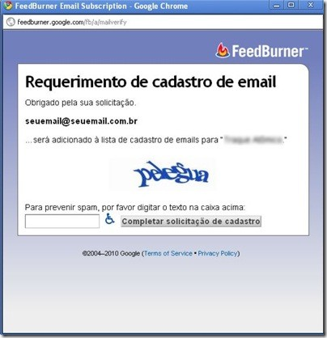

Este post serve para orientar você à receber as novidades do Portal da Educação de Camboriú em seu e-mail.
O e-mail é enviado, pelo FeedBurner, diariamente às 7:00h. Quando não houverem postagens, você não receberá o e-mail.
Fique tranquilo(a): este procedimento é 100% seguro, e sua privacidade será mantida. É um procedimento automático, que o serviço de Feed do FeedBurner monitora. Vale lembrar que o FeedBurner é da gigante Google!
Para receber as atualizações do Traque Atômico em seu e-mail, faça os seguintes procedimentos:
Na página inicial do Portal da Educação de Camboriú, você encontra o campo para digitar seu e-mail. Digite corretamente seu e-mail e clique em “Subscribe”.
Abrirá a janela abaixo em sua tela. Confirme se digitou corretamente seu e-mail. No campo inferior, digite a palavra que aparecer, e clique em “Completar solicitação de cadastro”.

Em seguida aparecerá a mensagem abaixo. Você pode, então, fechar a janela.
Vá à sua caixa de e-mails e procure pelo e-mail enviado pelo FeedBurner. Normalmente este e-mail é enviado imediatamente. Se não receber, algum procedimento acima foi feito errado.
O e-mail que receberá será como este:
Obs.: ele poderá estar em inglês, mas o desenho é o mesmo.
Clique, então, no link que aparecer, ou copie o endereço e cole-o na barra de endereços de seu navegador. Se tudo der certo, abrirá a seguinte mensagem na página:
Pronto! Agora você receberá as atualizações do Portal da Educação de Camboriú das 24 horas anteriores, sempre no mesmo horário.